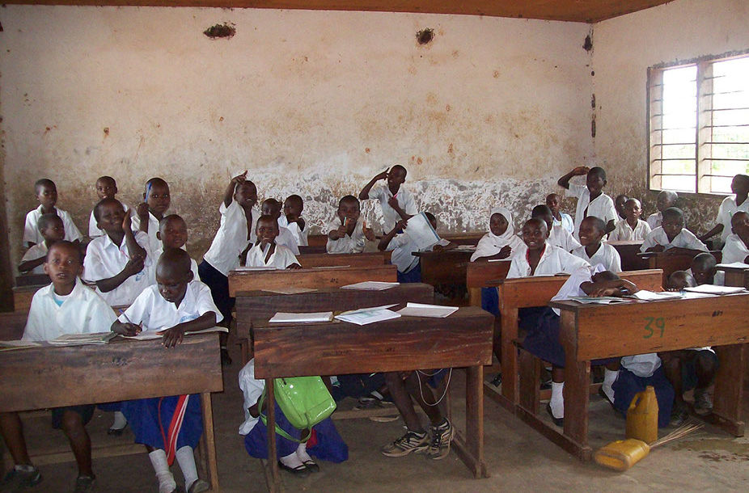

The quality of education remains a major challenge in Africa and repetition and drop-out rates are high. More than one student in ten repeats at least one grade in primary school in more than half of all countries in sub-Saharan Africa and particularly in Cameroon. We are seeking funds that will design and implement a program in Cameroon, particularly the northwest region, that would minimize the out-of-pocket costs of schooling, especially for the neediest children and families.
HELP THE LESS PRIVILEGED(HELLEP)
#HELLEP Every CommunityWe undertake developmental activities in target communities to ensure the avilability of nutritive foods and related non-food items, by encouraging agriculture, livestock production and other modern methods of increasing food supply.
#HELP THE LESS PRIVILEGE From Every Affected AreaWe support sick persons and war victims such as IDPs, refugees,casualties by assisting in covering the costs of medical treatments, and providing them with basic necessities.
#HELP THE LESS PRIVILEGE(HELLEP)We cater for less privileged kids and youths by providing them with basic necessities as well as ensuring that they acquire good eduction to improve the quality of living for less privileged persons.
We Need Your Help
We support sick persons and war victims such as IDPs, refugees casualties by assisting in covering the costs of medical treatments, and providing them with basic necessities. We plan, coordinate, network and implement humanitarian projects to better improve the living conditions of less privileged people in Cameroon, and globally.
BACK TO SCHOOL PROJECT FOR IDPs IN THE NORTHWEST REGION
The quality of education remains a major challenge in Africa and repetition and drop-out rates are high. More than one student in ten repeats at least one grade in primary school in more than half of all countries in sub-Saharan Africa and particularly in Cameroon. We are seeking funds that will design and implement a program in Cameroon, particularly the northwest region, that would minimize the out-of-pocket costs of schooling, especially for the needlest children and families.
18/07/2022 13:15 0 Comments
CLEAN WATER FOR SOUTHERN CAMEROON
We all believe good drinking water is actually good health, our mission is to provide good water sources around the different municipalities and good water treatment measures are put in place to manage the different water sources that supplied water to the community.
18/07/2022 13:15 0 Comments
WE SUPPORT AGRICULTURE
Implementing measures to ensure food availability and security through technical supports to farmers, public sensitization for prevention and eradication of crop and livestock pests, diseases, and the promotion of alternative food crops.
18/07/2022 13:15 0 Comments
EDUCATION FOR CHILDREN
We support war victims such as IDPs, and refugees by assisting in covering the costs of school fees and providing them with basic school necessities to fully resume school where ever they are located.
18/07/2022 13:15 0 Comments
Urgent Cause #School for Southern Cameroon StudentsTo organize forums, seminars, conferences, and other training programmes to educate attendees on good living habits, moral values, self-development, self-reliance, Cameroon’s cultures, and good citizenship.
How To Help Us
We fight against exploitation, injustice and corruption if found against any individual, class, community in the society.
01
Send Donation
Free will gifts, donations and legacies from persons and institutions other contributions comes from persons, partnerships, cooperations and other entities and supporters thereof, whether domestic or foreign.
02
Become Volunteer
In order to obtain a membership status, interested persons needs to be at least 18 years old, with sound minds, have a good criminal record, be morally upright, and has passion for humanitarian activities
03
Share Media
Fund raising campaigns and other contribution by members will be announcement on our different media forums.
We Help Many People
Want to Become a Volunteer
We educate people to adopt good norms of good citizenship and inculcate into their minds, ideas of national unity and togetherness.
LEARN MOREJOIN US NOW
About Us
Home / About Us
Welcome To Hellep
HELP THE LESS PRIVILEGE (HELLEP) ASSOCIATION, is a non-profit humanitarian organisation that is optimistic in targeting and assisting less privileged persons to live sustainably by improving their living standards, through empowerment and community development programs. To realise the objectives, we carry out our activities effectively in line with this constitution; the United Nation’s Sustainable Development Goals; some Millennium development goals, and the relevant applicable international and national laws.
Some of the measures put forth include Sustainable aid and Humanitarian services, Social assistance and health care, Advocacy and empowerment, Communication and Media, Outreach and exhibitions, Community sustainable development, Education and entrepreneurship, Fundraising and resource mobilization, networking with persons and organisations.
MEET OUR TEAMS
4
Project Completed
3
Our Team
4
Volunteer
AREAS OF OPERATION
Want to Become a Volunteer
Help the Less Privilege (HELLEP) carries out its activities in all the Regions of Cameroon, and can also extends it activities to other regions in Africa and worldwide, when needs be. Therefore, the organisation’s territorial jurisdiction herein, stands to facilitate its worldwide membership and operations by granting permission to its members living in different jurisdictions globally to form and operate local branches and incorporate them under the jurisdiction of other countries respectively, as the case may be. Some of the operational aspects includes: Sustainable aid and Humanitarian services, Social assistance and health care, Advocacy and empowerment, Communication and Media, Outreach and exhibitions, Community sustainable development, Education and entrepreneurship, Fundraising and resource mobilization, networking with persons and organisations
JOIN US NOW
OUR CREATION
On the 02nd of November 2018, HELP THE LESS PRIVILEGE (HELLEP) ASSOCIATION, was created as a Non-Governmental Organisation with Tita Lovela Seydou, as Founding President. This organisation is formed in accordance with provisions of law No. 90/053 of 19/12/90 and law No. 99/014 of 22/12/99 on Associations and NGOs shall govern the organisation.

The Administrative officials hold office for a period of four (4) years renewable, through elections at the General Assembly Meeting, or upon appointment(s) by the Trustees in one accord.
To significantly improve the standards of living of people living in less privileged communities. To target less privileged persons and assist them to live sustainably by improving their living standards, through empowerment and community development programms.
The committee shall be made up of the President as chairperson, the Vice President, the Finance Officer, Projects Supervisor and Secretary General of the organization. It shall study all projects to be executed and present to the Executive Committee for appraisals and execution.
In order to obtain a membership status, interested persons needs to be at least 18 years old, with sound minds, have a good criminal record, be morally upright, and has passion for humanitarian activities, exercise interest and active commitments to this organisation and its operations as a whole. Membership status ranges from Founder Membership (Trustees), Executive Membership, Ordinary Membership, Institutional Membership, and Honorary Membership.
To ensure considerable reductions in poverty, hunger and sufferings in less privileged communities, through developments that empowers those affected with skills and resources to boost productivity and food security.
To improve the wellbeing of the less privileged especially those affected by crises by ensuring them quality life through the provision of livelihood assistance and other basic social amenities.
To promote the existence of quality education and ensure the active involvement of less privileged persons by encouraging them to become educated and acquire relevant knowledge.
To ensure the practice of peace, justice, and unity among the less privilege population and their stakeholders, by applying the relevant laws and customs put in place by approved authorities.
To encourage total equality in communities with less privileged persons by advocating for gender equality, fight against tribalism, racism, xenophobia, and all forms of discriminations.
To build capacity and sensitize youths and communities on vital health issues, such as Malaria, HIV, hepatitis through sensitization campaigns, workshops and other related programmes.
To promote sustainable Agriculture, Fishery, Poultry, Forestry, and Animal Husbandry in both rural and urban communities hence enhancing economic activities and livelihoods of persons in need.
To organize forums, seminars, conferences, and other training programmes to educate attendees on good living habits, moral values, self-development, self-reliance, Cameroon’s cultures, and good citizenship.
To ensure a healthy environment through environmental programmes on tree planting, pollution control, waste management, erosion control, and other environmental awareness schemes.
To promote talents and skills of less privilege persons in communities through the organisation of shows, contests, sporting activities, creative forums, events and other platforms through which they can be empowered.
To undertake other activities, and initiatives which may be for the general welfare of the organisation, its members and stakeholders worlwide.
We cater for less privileged kids and youths by providing them with basic necessities as well as ensuring that they acquire good education to improve the quality of living for less privileged persons.
Our Volunteers Says
We will listen to nice words from our volunreers.
To give will never be a bad thing as we progress to the future, We will always need more hands to make the Emerging Nation happen as we plan to see by 2035.
Tita Lovela Seydou
Founding President
When knowledge kisses understanding wisdom is given birth too.
Josh Doel
Contractor
It has been a long journey to bring people together and impact ideas together and help around us to see the good of our community tomorrow.
Nkemchop Derick
Software Engineer
Always code as if the guy who ends up maintaining your code will be a violent psychopath who knows where you live
Makungong Collins
Software Engineer
BECOME A VOLUNTEER
Blog News
Home / News Grid
We Need Your Help
We support sick persons and war victims such as IDPs, refugees casualties by assisting in covering the costs of medical treatments, and providing them with basic necessities. We plan, coordinate, network and implement humanitarian projects to better improve the living conditions of less privileged people in Cameroon, and globally.
CHILD RIGHTS ADVOCACY
Human rights of children among other rights includes: the right to life, the right to a name, the right to express in matters concerning them, the right to freedom of thought, the right to health care, the right to protection from economic and sexual exploitation. We take steps to amplify their voices to speak up for themselves and be heard and we encourage children to actively take part in the decision-making processes that affect their lives
18/07/2022 15:03 0 Comments
STOP DRUGS ABUSE
Creating awareness among people about the dangers of taking drugs, alcohol, cigarettes, poisonous/toxic substances, as well as other unhealthy habits.
18/07/2022 13:17 0 Comments
PROMOTING TALENTS
We promote the talents and skills of less privileged persons in communities through the organization of shows, contests, sporting activities, creative forums, events, and other platforms through which they can be empowered.
18/07/2022 13:15 0 Comments
Our Gallery
Nice images from our activities carried out recently helping and impacting the community.
Events
Home / Events
HELLEP launches a Back-To-School Campaign to help underprivileged kids have basic needs for their effective education FOR 2022/2023 Academic year.
13:00:00Scientific research center up station Bamenda
Help the Less Privileged (HELLEP INTERNATIONAL) is glad to announce a "Back to School Support Event" for the IDPs of Bamenda. During this event, we shall be distributing school needs in the form of material support such as school bags, books, and other accessories to 40 Internally Displaced Persons in the City of Bamenda ranging from 3 to 15 years old.
Good Sherpard Home Orphanage
13:00:00Abangoh, Bamenda
Help The Less Privilege (HELLEP) is glad to announce an up-coming event on Sunday, 12th of June, 2022. Time: 1:00pm Prompt. Which is to visit an orphanage (Good Sherpard Home Orphanage) located at Abangoh, Bamenda. For this event we welcome Volunteers who wish to join us as well as donors and other well-wishers who can support us in any ways such as clothes, shoes, food, monetary contributions, and other supports that can be useful for the children at the orphanage. There is a saying which goes thus: “Something is better than Nothing”. So don’t feel reluctant to give the "little" you have for it shall be used to help those at the orphanage. Please kindly make your interest in this event known by reaching out to us via WhatsApp at +237 676 461 725 or via mail at hellep2020@gmail.com Thank you!
Our Partners
Join your hands with us for a better life and beautiful future.